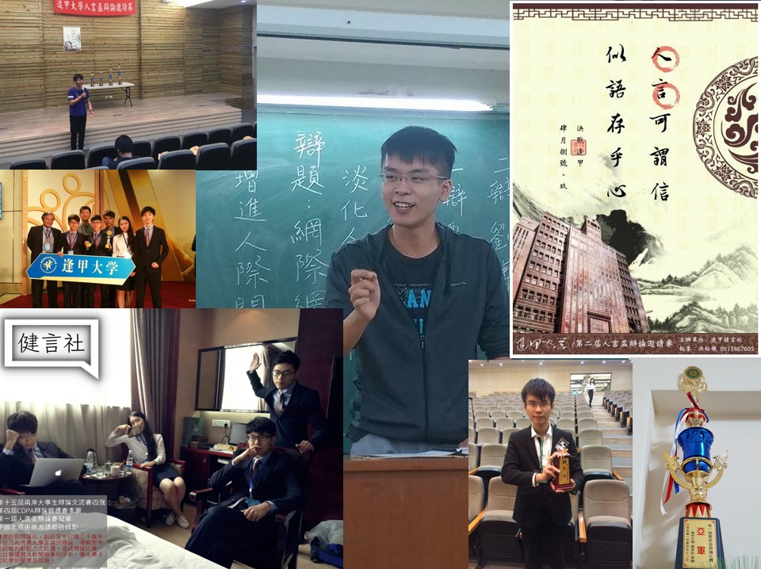

♦動機：我的個性屬於健談的人。由於高中時曾經看過辯論影片，看到辯手在舞臺上滔滔不絕、言之有理，因此對辯論有著憧憬。於是上大學的時候，迫不及待就加入了辯論社。不加入還好，一加入才知道大事不妙，原來辯論社與演講社大相徑庭。辯論重視邏輯、推論、資料解析力、攻防，而非單純像演講ㄧ樣的表演。但也如此，鍛鍊的我的獨立思考能力。
♦心得：辯論社鍛鍊了我許多能力。第一，我的邏輯變好。因為上台辯論之前的寫稿都要想盡辦法把各個資料的關聯性寫清楚，因此都得絞盡腦汁思考，間接鍛鍊了我的思維邏輯。第二，說話更有架構。之前的我說話很容易把不相干的事混雜在一起，但加入辯論社後更知道如何分辨事情輕重，說話更有層次。第三，能更容易聽懂對方說話的弦外之音。因為辯論的時候是在高度壓力情況接受對方質詢，因此鍛鍊了我更快速聽懂對方想問的問題。
♦動機：加入黑客社不是偶然，因為對於道德黑客（Ethical Hacker）所做的事情感到興趣。因此，想透過黑客社增進自己這方面的技能。
♦心得：確實學到很多知識，但更有趣的是，黑客社提供的不單單是知識，更多的是實作。透過實作，我更能將所學的知識整合在一起。
♦動機：學習swift的首選社團。因為自己本身手機使用iPhone，因此對IOS的語言特別感興趣，恰逢IOS APP社創社，所以加入共相盛舉。
♦心得：學習到很多IOS相關專業知識。比方說開發APP、AR遊戲，收穫良多。甚至自己也開發了一個手機APP-Animal Pit，使用Apple的AI model來自動辨識物體。
♦動機：小時候被卡通-網球王子影響，因此喜歡上網球，因此大學時接連上了三個學期的網球課，樂此不疲。
♦心得：打網球很有趣。每次在練習揮拍的時候，總需要不斷調整角度，以打出更有質量的球。因此，讓我悟出一個道理-唯有不斷練習，才能顛峰造極。